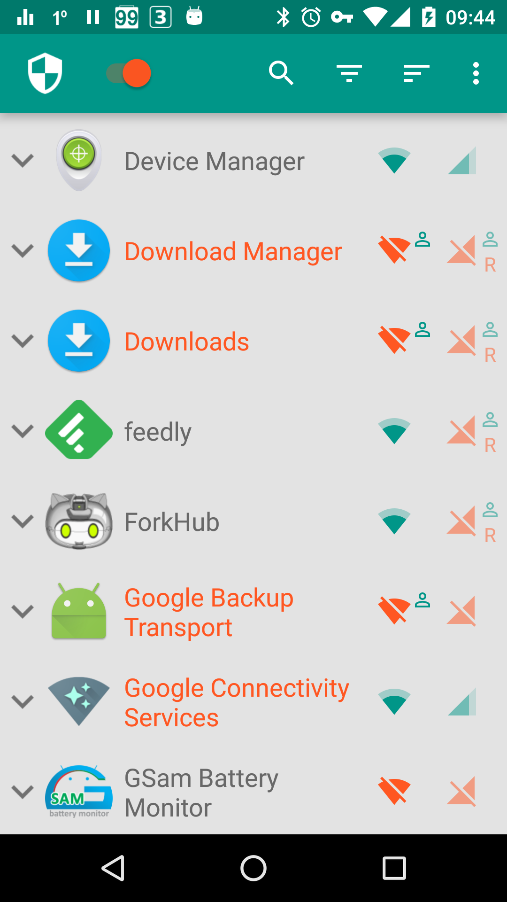
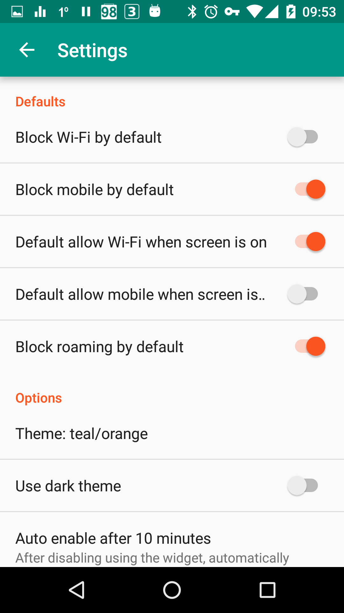

NetGuard 深度盘点：安卓上最安静的防火墙到底能做多少事
从应用级拦截到条件控制、从 Hosts 广告拦截到端口转发，系统性梳理 NetGuard 作为 Android VPN 防火墙的完整能力面，顺带聊聊它的局限和谁该用它。
NetGuard 在安卓防火墙圈子里不算新人，去官网翻翻就能发现这个定位它自己也不避讳，但真正把它玩透的人并不多。很多人只把它当成一个「开关应用联网权限」的小工具，装上开几天就觉得够用了。但如果你愿意往设置里多挖几层，会发现它其实是一个相当完整的 VPN 防火墙系统——从基础的 Wi-Fi / 移动数据双开关，到基于屏幕状态、漫游状态、锁屏模式的条件规则，再到 Hosts 广告拦截、子网路由和端口转发这类进阶功能，能力面比大多数同价位（它还是免费的）竞品要宽得多。
这篇文章我打算把它的几个核心能力域完整铺开，不凑功能清单，只讲清楚每一块能解决什么问题、亮点在哪、什么场景下真正用得上。
基础防火墙：应用级拦截的本质
NetGuard 的底层依托 Android 的 VpnService API——这意味着它不需要 root，就能在 VPN 隧道层面拦截应用的出站流量。这个定位很关键：它不是那种基于 iptables 的 root 防火墙，也不是只做域名过滤的 Hosts 管理器，而是把两件事揉在了一起。

基础用法就是应用列表里那两个图标：Wi-Fi 和移动数据，绿色允许、红色禁止。但别小看这个二元开关——它的真正威力在于「默认策略」的灵活性。你可以把所有应用设为禁止联网，然后一个个放行真正需要的；也可以反过来默认放行，只拦住那些你不想让它们跑后台流量的。两种策略都能用，完全取决于你的使用习惯。
一个容易被忽略的设计：系统应用默认不拦截。这是 NetGuard 有意识的选择——Google Play Services、Download Manager、系统时钟这些组件被误拦后后果很严重，普通用户很难准确判断哪些可以安全动手。想管控系统应用的话，需要手动在高级设置里打开「Manage system apps」，开启后整个 Android 系统组件都会出现在应用列表里，权限和普通应用完全一致。
条件控制：让拦截「有条件地发生」
如果只有静态的允许 / 禁止开关，NetGuard 其实算不上特别出彩。真正让它和其他防火墙拉开差距的，是那套条件控制体系——你可以给任意应用的联网规则加上「只有在某个条件下才生效」的前缀。
最常用的一项是「亮屏时允许」（Allow when screen on）。场景很典型：微信、Telegram 这类即时通讯应用，你不希望它们熄屏时后台偷跑移动数据推广告，但拿起手机用时又希望消息能正常到达。设置方法很简单——把移动数据图标改成红色（禁止），然后勾选「亮屏时允许」。效果就是：屏幕灭的时候完全不让它联网，屏幕亮起来自动放行。这个条件和 Android 6.0+ 的 Doze 模式效果类似，但更主动——你可以精准控制哪些应用被「亮屏放行」、哪些不。
类似的条件还有「漫游时禁止」「锁屏模式下允许」，而且它们可以叠加评估。比如你可以给微信设置：移动数据 = 禁止 + 亮屏时允许 + 漫游时禁止，结果就是只有在非漫游状态下、屏幕亮起时，微信才能用移动数据联网。切换条件即时生效，NetGuard 会在 1~2 秒内重载 VPN 规则，不需要重启防火墙。

Hosts 广告拦截：不止是改一个文件
很多人知道 NetGuard 可以配合 Hosts 文件做广告拦截，但真正把这件事做对的人不多。关键点在于：Android 应用的广告请求大多不是应用自己发的，而是通过 Google Play Services 代理出去的。如果你没开启系统应用管理，Play Services 作为系统组件不受 Hosts 规则约束——即使 Hosts 文件里有 admob.google.com，广告请求照样能通。
所以正确的姿势是：先在高级设置里开启系统应用管理（但不用主动拦截系统应用本身），然后导入 Hosts 文件。这样 Hosts 拦截才能覆盖到 Play Services 这个广告代理层，广告拦截才真正生效。NetGuard 本身不内置 Hosts 文件，需要你自己找来源——但拦截引擎的执行效率很高，几千条规则对 VPN 性能几乎没有影响。具体的参数调优在NetGuard文档里有更细的说明。
高级网络：端口转发是 GitHub 版独有的惊喜
如果你用的是 GitHub Release 或 F-Droid 渠道的 NetGuard（Google Play 版被政策阉割了这一项），还能解锁一个相当小众但对折腾党来说非常有价值的功能——端口转发。
Android 的 VpnService 设计上只处理出站流量，不接收入站流量。端口转发就是 NetGuard 在 VPN 层面的变通方案：你可以把 Android 设备的某个端口设为监听入口，外部设备连上后，入站流量会被重定向到你指定的目标地址和端口——可以是 Android 内部的 localhost，也可以是局域网 IP 甚至公网服务器。
典型场景有两个：一是你在 Android 上跑了 HTTP 服务或 SSH 服务，想从外部访问它；二是把 Android 当成一个轻量级中转代理，把收到的请求转发到另一台公网服务器。操作路径在设置 → 网络选项里，添加规则时填监听端口、目标地址、目标端口、网络类型（Wi-Fi / 移动数据 / 两者）即可。有个前置依赖：必须同时开启子网路由，否则 NetGuard 没法完成跨子网的流量重定向。
短板也要说
写盘点不说缺点是不负责任的。
首先，渠道差异是硬伤。Google Play 版因为政策限制砍掉了端口转发功能，想要完整特性只能从官方下载、GitHub Release 或 F-Droid 拿安装包。而且三个渠道的签名互不兼容——从 Play 版切到 F-Droid 版需要完全卸载重装，之前的配置也要重导。
其次，Samsung 旧机型（Android 8 / 9 时代）存在 VPN 启动的已知 bug。NetGuard 内部有 workaround 尝试绕过，但不保证所有机型都成功——如果 workaround 也失败了，只能等 Samsung 自己更新 ROM。
还有系统组件 UID 合并的问题。MIUI、One UI、ColorOS 这些国产 ROM 经常把多个系统功能打包到同一个 UID 组里，NetGuard 会把它们合并显示——你没法单独只拦截其中一个，必须对整个组统一设置。想精细管控的话会比较头疼。
最后，端口转发本身也有安全隐患——它意味着你对外开放了一个端口，只有确实需要时才应该开着，而且要清楚目标服务器是不是可信的。
什么样的人该用它
第一类：对后台流量敏感的安卓用户。如果你经常在外面蜂窝流量跑得莫名其妙、电池掉得快，NetGuard 的条件控制体系能帮你把大多数应用的后台联网掐干净，亮屏时再放出来——效果比单纯靠 Doze 模式要彻底得多。
第二类：Hosts 广告拦截的进阶玩家。NetGuard 提供了干净的 VPN 隧道层，配合系统应用管理和 Hosts 文件，广告拦截的执行效率比那些只改 Hosts 文件的工具高一个量级，而且不需要 root。
第三类：折腾党和轻量服务提供者。端口转发功能让 Android 瞬间变成一个能接收入站连接的设备，配合 Wi-Fi 热点和 NAT 转发，可以做出一些有意思的小型网络实验——当然前提是你用的是 GitHub 或 F-Droid 版本。
NetGuard 的完整资料我同步在了GitHub、Gitee 和 GitCode 三个仓库，GitHub 是主源，国内访问 Gitee 和 GitCode 体验更顺滑。